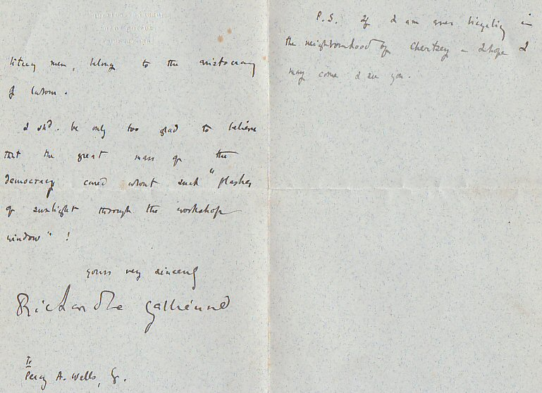

Tuesday, August the 24th, 2004
back to: title, date or indexes
Sir : Idly perusing your website the other day [Sunday 22nd August] I was interested to see the quotation from the late 19th century aesthete Richard le Gallienne. Here is part of an autograph letter I purchased many years ago, written by the great man from his house in Brentford to a certain Mr Percy A Wells in January 1895, which concludes: 'P.S. If I am ever bicycling in the neighbourhood of Chertsey—I hope I may come & see you.“ No mention of ‘froglike verbal spawning,’ but you can't have everything.Yours sincerely, Max Décharné
